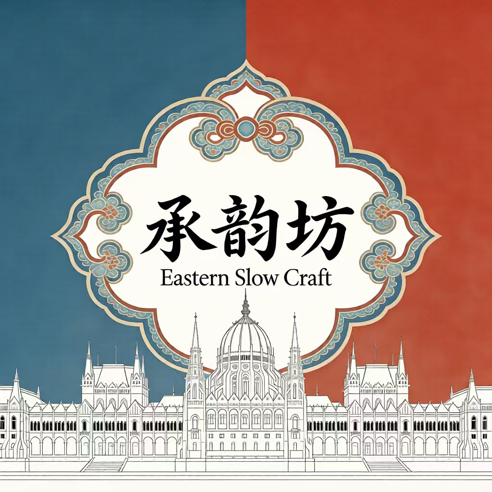
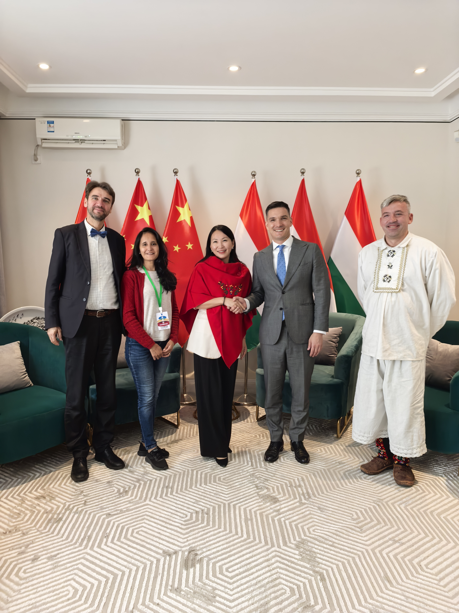
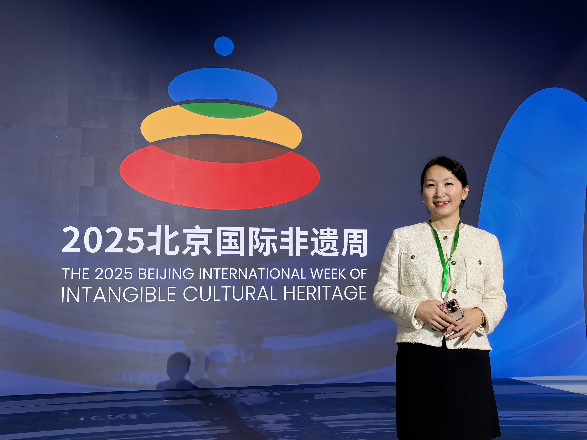

让世界看见中国非遗
—— 构建中国非遗走向欧洲的新平台
成立于布达佩斯，致力于推动中国与欧洲在文化、教育领域的合作，是中东欧地区中国非遗传播的重要平台。
关于我们
文化，是人与人之间最柔软却最持久的连接
在人类文明交流互鉴不断深化的今天，中国非物质文化遗产正承担着新的时代使命。它不仅是中华文明的历史记忆，更是中国文化走向世界的重要语言。
在欧洲多瑙河畔，一座连接中国非遗与欧洲社会的文化平台正在逐渐形成。我们以文化为桥梁，以社会交流为基础，推动中国非遗在欧洲实现从“展示传播”到“社会融入”的转变。
中东欧地区中国非遗文化传播的重要平台
“中国非遗承载着中华民族数千年的智慧与审美，是中国文化最具生命力的表达方式之一。”

我们的时代使命
文化窗口
让中国非遗成为世界理解中国的重要窗口，承载中华民族数千年的智慧与审美。
社会融入
推动中国非遗在欧洲实现从‘展示传播’到‘社会融入’的转变，让非遗走进欧洲社会。
文化纽带
让文化交流成为中欧关系的重要纽带，促进中欧文明之间更加平等与深入的交流。
我们的文化实践平台

“承韵坊” 实践空间
基金会旗下文化项目 “承韵坊” 是中国非遗在欧洲的重要实践空间。位于布达佩斯，是一个以中国非遗为核心的文化传播与体验中心。
可体验的文化传播：让欧洲公众亲身感受手工艺魅力
在地传播基地：让非遗成为一种可触摸的生活文化
我们的核心优势
与传统短期文化交流活动不同，我们致力于构建一个长期可持续的中国非遗国际传播生态。
欧洲在地文化运营能力
基金会总部位于布达佩斯，长期深耕中东欧文化合作网络。
政府与文化机构合作网络
与中国驻匈牙利使馆体系、中国文化中心以及欧洲文化机构建立深度合作。
文化与经贸融合路径
通过非遗文化促进中国企业与当地社会建立文化理解与社会信任。

